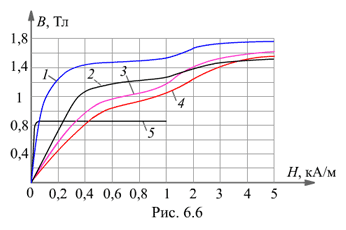

6.1.7.2. Кривые намагничивание магнитно-мягких материалов
На рис. 6.6 приведены кривые намагничивания электротехнической стали (сплавов на основе железа с присадкой кремния от 4 до 4,8% и других элементов) марок: 3411 (листовая холоднокатаная, кривая 1), 1512 и 1212 (листовые горячекатаные, кривые 2 и 3) толщиной 0,28…0,6 мм, литой стали 10895 (кривая 4) и пермаллоя 50НП (кривая 5).
Наибольшие магнитные индукции для электротехнических сталей, получаемые при практически целесообразных напряжённостях магнитного поля, составляют 1,5…1,9 Тл. Цифры в обозначениях марок электротехнических сталей определяют содержание кремния, удельные магнитные потери энергии и другие показатели.
Площадь гистерезисной петли определяет расходуемую энергию в единице объёма ферромагнетика (нагревание магнитопровода) на преодоление упругих сил для принудительного поворота векторов намагниченности доменов в течение одного цикла перемагничивания. Потери энергии в магнитопроводе складываются как из потерь из-за гистерезиса – явления отставания изменения В от изменения Н, так и от протекания вихревых индуктированных в магнитопроводе токов. Вихревыми токами называют электрические токи проводимости, возникающие и замыкающиеся внутри электропроводного магнитопровода, находящегося в переменном магнитном поле. Потери, связанные с вихревыми токами, будут тем меньше, чем больше удельное сопротивление ферромагнитного материала и меньше толщина листов магнитопровода. Из этих листов штампуют пластины требуемой конфигурации; из изолированных друг от друга пластин составляют магнитопровод.